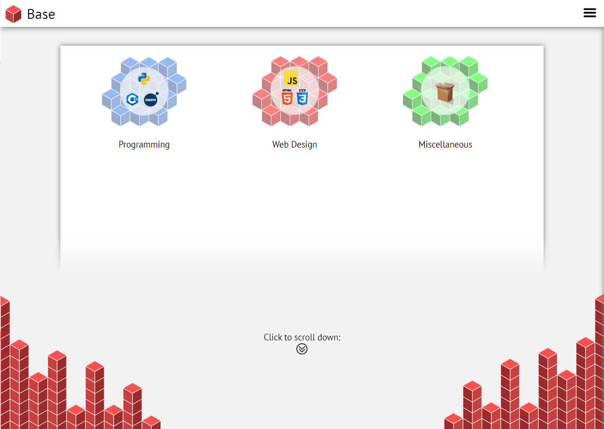

I have enjoyed making websites for as long as I have been in to programming - they served as a great introduction to the world of
computer science. Javascript was the first programming language I learnt as I discovered I could use it to move and provide functionality
to my web pages. This then lead to me learning Python, then C++, now Haskell and Java at University.
The previous version of my website looked like this:

It had impressive smooth transitions between pages and had a relatively simple design with nice isomorphic cube pattern designs.
However, the smooth transitions and fades probably out-shone any content that I put on it and I quickly realised it would be
a nightmare to try make responsive.
I therefore decided to switch to a simpler design, which is what you see right now.
 Gavin McWhinnie
Gavin McWhinnie